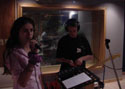
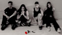
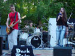
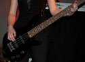
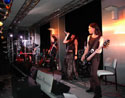

Es war einmal ein dunkler Halloweentag (zwar war es eher sonnig, aber das trübt die Stimmung)! Ich wurde auf die Halloweenparty bei Pfannenschwarzes eingeladen, und machte mich mit einem schaurig aussehenden Gesicht sogleich auf den Weg. Es wurde mehr getanzt und gegessen, als ich es mir hätte vorstellen können, doch etwas fehlte mir!
Ich kannte bis dahin nur unsere Sängerin (Sarah), doch dies sollte nicht so bleiben! Ich fragte mich, ob ich wohl einmal in das Studio des Hauses gehen durfte, das ja aufgrund der Pfannenschwarz-Promotion vorhanden war. Unsere Sängerin willigte ein, und machte sich mit ihrer Freundin (Conny) und mir auf den langen Weg in das düstere Studio im Keller! Nun eigentlich war es nicht zu einer Folterkammer umfunktioniert worden, was ja an Halloween so hätte sein können (schade). Es war also nur ein überdurchnittliches, normales Studio, ohne Untote oder Sondergleichen.
Als ich daraufhin eintrat, wurde es mir ganz warm ums Herz! Vielleicht lag das auch an der Heizung, und daran, dass die Klimaanlage aus war, aber es war einfach faszinierend! Bei dem Anblick einer genialen E-Gitarre war ich aus dem Häuschen, nein, nicht weil sie so einzigartig war und einen genialen Sound hatte, was ich ja da noch nicht erahnte, nein, weil ich mich gar nicht bändigen konnte sie jetzt zu nehmen, um auf ihr zu spielen!
Ich spielte damals erst ein halbes Jahr Gitarre, und zwar auch nur eine Akustikgitarre, jedoch änderte sich dies an jenem Abend. Ich klimperte auf der Gitarre rum, worauf sich Sarah und Conny umsahen, was sie nun machen könnten. Nachdem Sarah herausgefunden hatte, das ihre Stimme auch als ein musikalisches Instrument verwendet werden konnte, stellte sie sich ans Mikrofon, und begann irgendwelche Lieder, bloß ganz sicher nicht die, die ich spielte, zu singen. Nachdem Conny nicht rumstehen wollte, schnappte sie sich den Bass.
Als wir so nun rund eine halbe Stunde verbrachten kamen wir auf die grandiose Idee eine Band zu gründen! Da man jedoch dazu noch mindestens einen Schlagzeuger benötigt, dachten wir uns, dass wir Sarahs Bruder Harry mal ins Studio holen. Er hatte schon von Anfang an Spaß am Schlagen. Er war wie dafür geboren die Toms, Crashs, Splashs, und das Hi-Hat zu vermöbeln! Auch der Base Drum machte er es nicht leicht zu überleben!
Schon nach wenig Zeit wurde sein Gefühl fürs Schlagzeug sehr beachtlich! Auch Conny lernte ziemlich schnell, mit dem Bass umzugehen, was sicher auch daran lag, dass es ihr sichtlich Freude bereitete in einer Band zu spielen. Wir berieten daraufhin unseren Bandnamen, und kamen eine Woche später auf Black Rain, was sich zwei Wochen später durch einen genialen Einfall von Harry zu Dark Rain veränderte.
Als dann Sarahs Mutter unbedingt wollte, dass Liza (Sarahs und Harrys Schwester) auch in der Band mitspielt, hatten wir plötzlich ein Mitglied mehr. Was sollte sie nun spielen fragten wir uns, da sie zumal anfangs gar nicht mitspielen wollte, sondern von ihrer Mutter in die Band hineingezwängt wurde, was jedoch schließlich eine sehr gute Aktion war! Nun wir wurden zunächst zu einer der wenigen Bands, die mit zwei Bässen spielte.
Nach etwa einem halben Jahr hatten wir schon ein beachtliches Programm an eigenen Liedern zusammengestellt, und bestritten unseren ersten Auftritt bei der gemeinsamen Geburtstagsfeier der beiden Zwillingsschwestern Sarah und Liza, die in dem Helikopterhanger (praktisch eine riesige Garage, bloß für einen Helikopter) stattfand.
Am Ende des Schuljahres hatten wir einen Auftritt auf dem Schulhof, den wir nun aber nur noch zu viert bestritten. Conny hatte keine Unterstützung ihrer Eltern bezüglich der Band. Sie wollten, dass sie nicht ihre wertvolle Zeit dafür verschwendete. Kurzum, ab nun bestand unsere Band nur noch aus vier Mitgliedern. So ist es bis heute geblieben, und so wird es nun auch bleiben, denn heute sind wir mehr als nur eine Band, wir sind ein eingespieltes Team, dass zusammengehört, und das nun auch gut zu viert klar kommt.
Markus, Juli 2001
In dieser Konstellation flogen die vier 2001 kurzerhand nach Amerika um im Echo-Beach-Studio in Florida das erste Album, "The First Songs", für die Nachwelt zu verewigen. Das zweite Album "Frame of Mind" folgte 2003 und bestand bereits aus stolzen 17 Titeln.
So gingen die Jahre ins Land – um genau zu sein knapp 4 Jahre – und abermals stand ein Bassisten-Wechsel an. Liza hatte das ständige Blitzgewitter der Paparazzi satt und wechselte ihre Musikvorliebe um 180°. Selbst der superteuere Musicman-Bass, den sie von ihrem Vater bekam, konnte sie nicht überzeugen dabei zu bleiben.
Nun schien es, als hätte sich das eingespielte Team ausgespielt: ein halbes Jahr lang bestand Dark Rain nur noch aus Sarah, Markus und Harry. Trotz aller Anstrengungen und Bemühungen wollte sich einfach kein neuer Bassist finden lassen.
So. Und nun komme ich ins Spiel. Irgendwann dachte ich bei mir: "Ach, studier doch einfach Mediendesign!". Und Markus dachte sich irgendwann: "Ach, studier doch einfach Mediendesign!". Durch diese glückliche Fügung des Schicksals lernten wir uns also kennen verstanden uns auf Anhieb gut, was wohl in einer von HipHop- und Baggiehosen-regierten Welt vor allem am gleichen Musikgeschmack gelegen haben muss ... Er erzählte mir, dass er in einer Band namens "Dark Rain" die Saiten schwingen lässt und brachte mir gleich am folgenden Tag (natürlich aus reiner Nächstenliebe und nicht aus Promotionzwecken) beide Alben mit.
Und wer hätte es gedacht? – Ich fand die CDs richtig klasse und prophezeite ihm voller Begeisterung sodann eine große Zukunft. Anstatt sich zu freuen kullerte ihm jedoch eine einsame Träne über die Wange (irgendwie muss ich meine Geschichte doch aufwerten!) und er sagte mir, dass ihre Bassistin sie wohl bald verlassen wird. Dem geschah dann auch so und schon als ich das erste Mal zur Bandprobe zum Zuhören (ich hielt mich immer für schrecklich unmusikalisch) eingeladen war, war Liza nicht mehr dabei. In meinem musikalischen Unwissen hielt ich es zwar nicht für unmöglich, dass die drei ohne Bass weitermachen, da ich auch so vollkommen fasziniert von dem, was sie mir da darboten, war, aber ich half dann doch mit einen neuen Bassisten zu suchen.
Nachdem die riesige Welle an Meldungen ausblieb, drückte mir Markus einfach mal seinen Bass in die Hand und ich klimperte ein wenig darauf rum. Und irgendwie machte es Spaß. So zerrte mich Markus mit meiner 10-minütigen Erfahrung mit zur Bandprobe. Harry und Sarah waren sichtlich erfreut und sahen sofort ihre neue Bassistin in mir. Natürlich hab ich ihnen gleich gesagt, dass ich doch total unmusikalisch sei, aber Harry sah als Gegenbeweis allein, dass ich den Bass richtig rum hielt (natürlich nur zu überredungszwecken) ... Ich bot ihnen jedoch meine mir in der zweiten Klasse angeeigneten Blockflötenkünste an, doch das wollten sie nicht wirklich würdigen. Also griff ich dann doch in die Saiten. "In zweieinhalb Monaten ist Auftritt. Können wir mit dir rechnen?" – erschien mir natürlich vollkommen absurd, da ich ja auch ganz nebenbei angefangen hatte zu studieren und ich mir ja nicht nur die Lieder merken, sondern auch das Bass spielen an sich erstmal lernen musste.
Na ja, 4 Wochen später stand dann erstmal mein eigener Bass in meinem Zimmer und ich war vom ersten Tag an bei jeder Bandprobe mit von der Partie.
Noch mal 4 Wochen später übernahm netterweise Steffen von Scrunge die 4 Saiten und so hatte ich weitere 2 Wochen bis zu meinem ersten Auftritt. So wurde ich vom Fan zum Mitglied und stand nach zweieinhalb Monaten Basserfahrung auf der Bühne. Dadurch verdiente ich mir dann meinen Bandnamen "whizz kid" – Senkrechtstarter.
Und da mir Bass spielen mehr Spaß als Schreiben macht, schließe ich mit Markus Worten (in abgeänderter, kommentierter Form): Kurzum, ab nun bestand unsere Band wieder aus vier Mitgliedern. So ist es bis heute geblieben, und so wird es nun auch bleiben, denn heute sind wir mehr als nur eine Band, wir sind ein eingespieltes Team (öhm, ja, ich geb mir Mühe ...), das zusammengehört, und das nun auch gut zu viert klar kommt.
Katja, Juli 2005